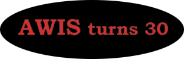

Dear AWIS Chapters:
This year the Association for Women in Science will be celebrating our 30th anniversary. AWIS was founded on April 17, 1971 by a small group of women who wanted to improve the position of women in the sciences. We would like to get AWIS chapters and members involved in the 30th anniversary events. The kickoff event occurred in February at the AWIS reception in San Francisco, California. Many local chapter members were able to attend. AWIS Fellows were announced at this reception and their names are listed on the web site. There will be an article on the reception in the upcoming AWIS magazine.
The national office has added a 30th anniversary page to our web site (http://www.awis.org/30th.html). This will include pearls of wisdom from notable women and a list of all the events occurring this year. As you may know, pearls are the traditional symbol representing 30th anniversaries.
An essay contest will be organized for both high school girls and undergraduate women. The subject will be what they envision about science in the 21st century and women's role in the sciences. Winning essays will be published in the AWIS magazine and placed on the web site. Prizes for winning essays will be presented at the October Leadership Conference in Washington, DC. The tentative deadline for essay submissions is mid-August. The essays will be read and evaluated by an advisory committee. The national office welcomes members to submit names of potential advisory committee members to Krishna Shah at shah@awis.org. Further details about the essay contest will be in the AWIS magazine and on the 30th anniversary web page.
An AWIS Leadership Conference will be held in Washington, DC, October 18-20, 2001. Two themes have been chosen for the conference: one is Unity, Science & Policy; and the second is Service & Careers. The focus will be on AWIS members and provide a forum to explore issues relevant to them in their careers.
The national office is looking forward to the 30th celebratory events and we hope that you will join us in the celebration.